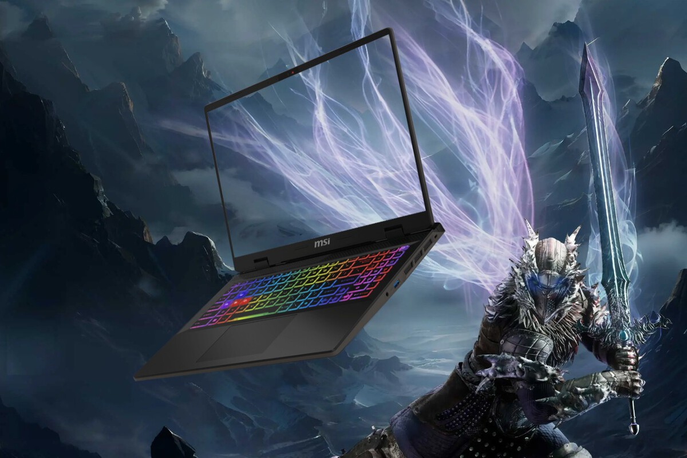

Un potentísimo Intel i9 y 32 GB de RAM
Aunque todo hace apuntar a que la nueva generación de tarjetas gráficas de NVIDIA está al caer, los equipos que montan las actuales RTX 4000 de la serie Ada Lovelace siguen siendo magníficas opciones de compra. Sobre todo, si los encontramos rebajados. Como sucede con este portátil MSI por 1.349 euros en Amazon.
En apenas un par de semanas tendrá lugar una nueva edición del Black Friday: la mayor fiesta de las ofertas de todo el año, momento que muchos usuarios aprovechan para estrenar hardware a la par que se ahorran un pellizco. Sin embargo, Amazon no espera más y ya tiene rebajados equipazos como este de MSI, que ahora alcanza su mínimo histórico y sale por esos 1.349 euros.
Hablamos del MSI Sword 16 HX, en su variante B14VFKG-483XES 20 Anniversary Edition. Un portátil con un potente hardware que le permite exprimir toda clase de juegos a 60 FPS estables o más, pero que también lo hace ideal para trabajar o estudiar si necesitamos potencia de gráfica y procesador.
Porque, precisamente, esa es una de sus grandes bazas: el Intel Core i9-14900HX que encierra, uno de los procesadores de portátiles más potentes y con mejor rendimiento de la actualidad con 24 núcleos divididos entre 16 de bajo consumo y 8 de alto rendimiento.
Ahí no acaba la cosa, y a la zaga de esta CPU le van una tarjeta gráfica NVIDIA RTX 4060 (la actual reina de la gama media), 32 GB de memoria RAM y 1 TB de almacenamiento SSD NVMe M.2 PCIe Gen4. Todo ello, acompañado por una pantalla de 16 pulgadas con resolución Full HD y un diseño llamativo como es habitual en MSI. Sólo echamos en falta el sistema operativo, cuya instalación correrá por nuestra cuenta.
Textos de las noticias obtenidos de xacata.com | Leer noticia completa